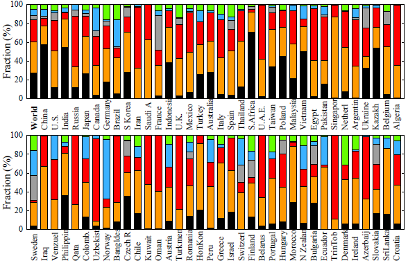
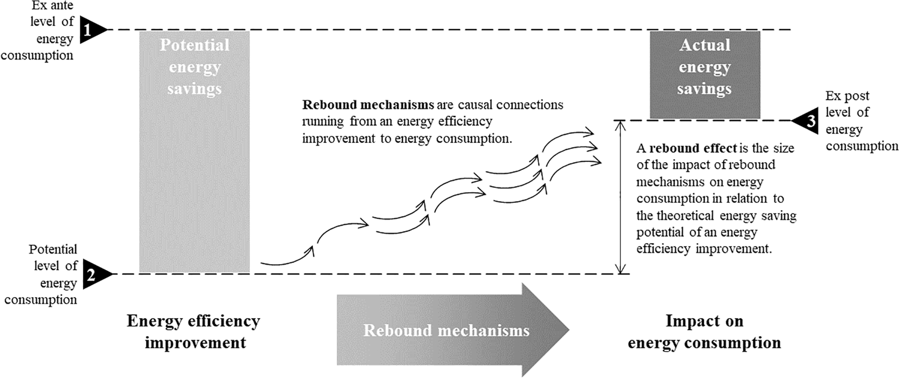
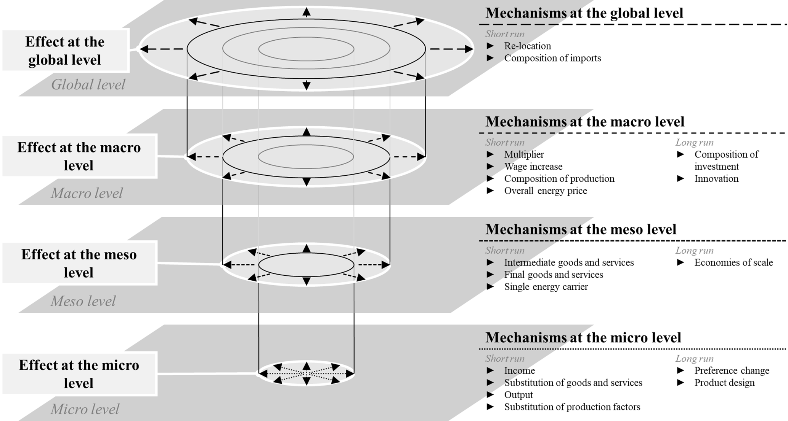
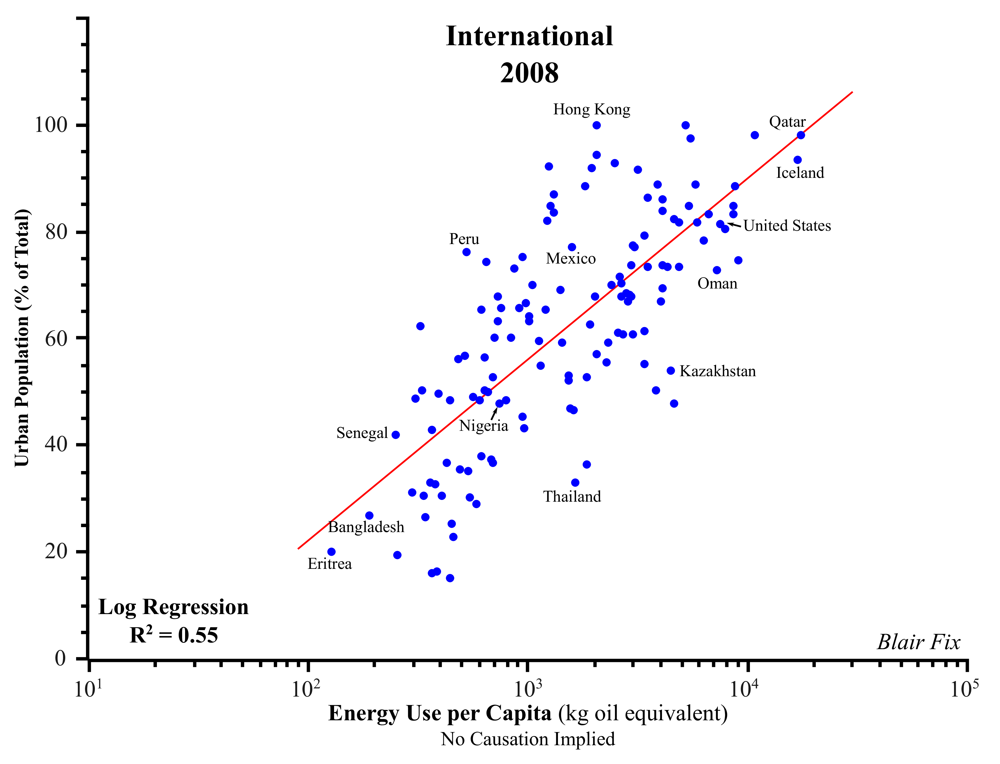
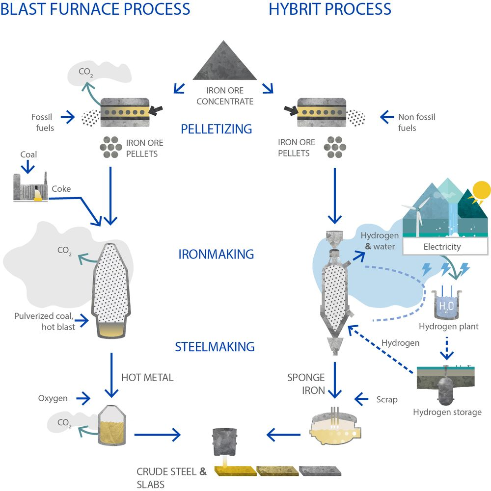

27 Energy Use
James Hansen obviously has not confidence in renewables
China and India have large, growing economies that depend on fossil fuels, especially coal. They are also global leaders in producing and installing renewable energies. Their enthusiasm for renewables is whetted by the opportunity to be global suppliers of renewable materials such as solar panels. Their own use of renewables is extensive and growing, but there is no realistic expectation that renewables will displace the need for baseload electric power.
Phase-out of fossil fuels in electricity production likely requires large expansion of renewable energies and at least a doubling or quadrupling of global nuclear power.

Fig. Energy consumption (percent) in 2019 by fuel in world and 71 nations: BP data (black = coal, orange = oil; red = gas; gray = nuclear; blue = hydro; green = renewable). [Source:James Hansen: Planet Ch47]
27.1 Energy Efficiency
27.1.1 Rebound effect
Rebound effect = Jevons Paradox
Lange
Literature on the rebound phenomenon has grown significantly over the last decade. However, the field is
characterized by diverse and ambiguous definitions and by substantial discrepancies in empirical estimates and
policy proposals. As a result, cumulative knowledge production is difficult. To address these issues, this arti
cle
develops a novel typology. Based on a critical review of existing classifications, the typology introduces an
important differentiation between the rebound mechanisms, which generate changes in energy consumption, and
the rebound effects, which describe the size of such changes. Both rebound mechanisms and rebound effects can
be analytically related to four economic levels – micro, meso, macro and global – and two time frames – short r
un
and long run. The typology is populated with eighteen rebound mechanisms from the literature. This contribution
is the first that transparently describes its criteria and methodology for developing a rebound typology and th
at
gives clear definitions of all terms involved. The resulting rebound typology aims to establish common con-
ceptual ground for future research on the rebound phenomenon and for developing rebound mitigation policies.

Figure: The relationship between energy efficiency improvements, rebound mechanisms and rebound effects. This figure presents the definitions and illustrates the conceptual distinction between rebound mechanisms and rebound effects. The size of the rebound effect is defined by the relationship between three levels of energy consumption: 1) “ex ante”, i.e. before the efficiency improvement, 2) “potential”, i.e. theoretically possible due to the efficiency improvement, and 3) “ex post”, i.e. actually realized by the efficiency improvement. Actual savings can be negative in case of backfire. Rebound mechanisms link the energy efficiency improvement to its actual impact on energy consumption.
While there are a variety of existing classifications of rebounds ef fects, few articles have focused on developing coherent and transparent typologies. This paper aims to advance the foundations of such a ty pology by systematically building on existing typologies and being clear in its definitions and its development. We see our attempt as a step to wards developing a shared typology as envisaged by Dunlop [3]. A possible next step would be to challenge or advance this typology by attempting to incorporate non-economic rebound mechanisms and to see in how far and in what ways it would need to be adjusted. It is our hope that the transparency of our approach will provoke further critical debate within the community, at the end of which some form of agreed typology could emerge.

Figure: Rebound effects and mechanisms at different economic levels and time frames. This figure provides an overview of the central categories in our typology. Four stacked analytical levels on which the rebound effect can be measured are distinguished. At each level, several rebound mechanisms, which are represented by the arrows, cause an increase in energy consumption. The respective types of mechanisms are categorized into short run and long run mechanisms. The connecting lines between the levels indicate that the rebound effect at a lower level is part of the rebound effect at a higher level.
27.2 Urbanization
Fix (twitter)
Are cities sustainable? A loaded question, yes. But one we should think about nonetheless. Here’s an undeniable fact: urbanization correlates strongly with energy use per person.

27.3 Green Steel
Roselund
In conventional iron production, blast furnaces use coke — nearly pure carbon coal — to heat ore and separate oxygen from the iron in the ore. For this step, Hybrit uses a different, more efficient process called direct reduction. While this can be done with natural gas or even coal as the agent that removes the oxygen, Hybrit’s innovation is to use hydrogen made from electrolysis powered by renewable energy. The clean exterior of the facility is a testament to this: Instead of soot from unburned carbon and large amounts of CO2, the Hybrit plant emits clouds of water vapor.

This is groundbreaking. Iron and steel production accounts for 7% of total global CO2 emissions, and climate and energy experts have long considered it one of the more challenging industries to decarbonize. Recycling of steel can mitigate some of the emissions — provided furnaces run on electricity from low- or zero-carbon sources — but will not suffice to meet global demand in the 21st century. Building all of the wind turbines, transmission towers and other infrastructure we need for global decarbonization will require a lot of steel. Additionally, growing economies in China, India and other rapidly developing nations are expected to drive a big increase in steel demand over the next few decades.
Roselund (2021) Green steel is picking up steam in Europe (CanaryMedia)
27.3.1 Molten Oxide Electrolysis
Soltoff
Decarbonizing the steel industry is a major hurdle in dealing with climate change. Steel production is responsible for close to 7% of global greenhouse gas emissions, roughly equivalent to the annual emissions of all the cars on the world’s roads. But steel is also used to make cars, so these impacts are overlapping. And that gets to the very heart of why steel is such a big deal when it comes to climate change: It’s everywhere.
Decarbonization often comes down to finding creative uses for electricity. The playbook is simple. You take a process that traditionally burns fossil fuels, and then you replace it with an alternative that uses clean electricity instead.
Of course, this is much easier said than done, especially for heavy-duty industrial processes like steel production. In these cases, many solutions rely on green hydrogen as a sort of middleman. You can use clean electricity to produce hydrogen, and then burn hydrogen to make steel, with only water as a byproduct. A joint venture in Sweden is already producing fossil-free steel using this method, though still in relatively small quantities.
One company, MIT spinout Boston Metal, is aiming to streamline the process by eliminating the green-hydrogren step and instead using electricity directly for making steel. Its process is based on technology called molten oxide electrolysis that uses electric current to separate oxygen from iron ore, a critical step in the steel production process.
Boston Metal has already raised $85 million from climatetech heavyweights like Breakthrough Energy Ventures, The Engine, Prelude Ventures and Energy Impact Partners, along with several industry coalitions and corporate venture groups. It aims to build its first commercial steel plant by 2024 or 2025, and then license its technology to major steel producers.
Producing 1 ton of steel with traditional methods releases almost 2 tons of CO2 into the atmosphere, and the world uses almost 2 billion tons of steel each year.
In the short term, existing steel can be melted down with electricity and reused, which can displace the need for new product — but only to a point. Most of the world’s steel needs can only be met with primary production because recycled steel doesn’t work for certain high-grade applications, and more significantly, there’s just not enough of it to keep pace with demand.
The traditional way to make steel is to melt iron ore at very high heat (over 1,500 degrees Celsius), then refine it from iron oxide into pure iron and fortify it with small amounts of carbon. It’s a complex process that emits carbon at different stages. Some emissions come from the heating process, which usually involves burning a heat-refined form of coal called coke. A bit of the carbon from the coke gets dissolved into the iron, turning it into steel. Another chunk of emissions comes from chemical reactions that occur as the iron oxide is purified of its chemically bonded oxygen. That oxygen reacts with dissolved carbon and breaks off as carbon dioxide gas.
Over half of the emissions come from a single piece of equipment used in the process: the blast furnace, where the iron ore is converted into a form called pig iron. Decarbonization of the iron and steel industry basically means decarbonization of the blast furnace.
Green hydrogen appears to be the most promising route to decarbonizing steel, with hydrogen-powered direct reduction of iron as a key step in cutting the emissions from blast furnaces. This process is now being used in green steel projects in Europe, and some of China’s biggest steelmakers are exploring it as well. Molten oxide electrolysis is too nascent.
The core principle of using electricity to refine metal has been around for a while. In fact, electrolysis has been a key part of making aluminum for over 100 years. Boston Metal’s molten oxide electrolysis process applies this technique to iron, which requires hotter temperatures. Aluminum electrolysis happens at temperatures just under 1,000 degrees Celsius, while iron electrolysis requires about 1,600°C, a temperature far hotter than molten lava.
To start, the iron ore is melted with heat produced from electricity. Then it’s placed in a cell structured almost like a giant battery. At the top, an anode provides electric charge. At the bottom, a cathode receives the electric charge. In between, the charge flows through an electrolyte, which in this case is a scalding bath of molten materials. The electrolyte contains a variety of elements bound to oxygen, including aluminum, silicon and calcium.
All of these oxides are more stable than iron oxide, so the iron oxide is the first to separate when exposed to electric charge, breaking down into pure oxygen and iron. The iron, still liquified, sinks to the bottom where it can be tapped out and turned to steel.
The composition of the electrolyte is a critical advantage of its technology. All of those other elements in the electrolyte are also present in iron ore as impurities, but the impurities stay behind in the electrolyte after the pure iron is removed. That means the process works even with low-grade iron ore, which is cheaper and more plentiful than higher-grade ore that has fewer impurities.
Another of molten oxide electrolysis’s advantages compared to direct reduction of iron is its efficiency. The reason is fairly intuitive. By cutting out the hydrogen step, MOE puts energy directly into steel production, removing interim stages where energy can be lost. MOE requires higher temperatures than hydrogen-based production, which eats into the benefits, but even taking that into account, MOE still winds up being more efficient. Making green steel using green hydrogen requires at least 30% more energy than MOE — and possibly as much as 50% to 60% more.
Boston Metal says that its technology uses 4 megawatt-hours of electricity to produce 1 ton of steel. According to Columbia’s research on decarbonizing steel, replacing all the world’s blast furnaces with MOE manufacturing processes would require an amount of power equivalent to almost 20 percent of global electricity consumption in 2018. That means the steel industry would become one of the biggest users of electricity on the planet.
But replacing all steel production with hydrogen-powered direct reduction of iron could require even more electricity. That means there’s no way to address steel’s climate impacts without installing a whopping amount of clean power generation, in addition to making sure that the grid is ready to reliably move around all that extra electricity.
Soltoff (2022) Green steel without green hydrogen — can it work?
27.4 Aluminum
Takemura
Aluminum is a linchpin of the clean-energy economy. The gleaming metal is found not only in EVs and solar panels, but also in wind turbines, heat pumps and the transmission lines critical for building out the grid. By 2035, IRA-driven demand for aluminum for use in wind turbines and solar panels is forecast to exceed all of the aluminum produced in the U.S. in 2022. So the industry now faces the twin challenges of drastically ramping up production while simultaneously slashing CO2 from its operations, which currently account for 2 percent of global greenhouse gas emissions annually.
The industry’s emissions stem mainly from the incredible amount of electricity used to produce primary aluminum, which is refined directly from ore rather than recycled metal. In this process, smelters zap 1,700˚F-plus baths of molten salt and aluminum oxide with electricity in order to precipitate out pure aluminum.
In 2021, roughly 70 percent of U.S. aluminum’s emissions came from those electricity demands, according to a report by the nonprofit Environmental Integrity Project. Only one plant in the U.S. runs on renewable hydropower, while the others run on fossil fuels, including coal.
Of the remaining 30 percent of emissions, about 20 percent are a byproduct of the electrolytic reaction itself — the fossil-fuel anode that conducts electricity releases CO2 and other greenhouse gases — and 10 percent come from making the anodes and producing the precursor aluminum oxide (alumina), according to the report.
Several of the letter’s signatories, including Ford and GM, are also members of the First Movers Coalition, a group of companies leveraging their purchasing power to drive industrial decarbonization. They’ve pledged that of the primary aluminum they buy, at least 10 percent will be low-carbon — defined by the group as emitting less than 3 metric tons of CO2 per metric ton of aluminum — by 2030.
There’s not much U.S.-made aluminum to buy these days, dirty or clean. Most primary aluminum is produced by China, followed by India and Russia. Meanwhile, the U.S. aluminum industry is in crisis: The sector has shrunk from 23 smelters three decades ago to just five in operation today. And those holdouts are struggling due to “spiking [fossil] electricity prices, lack of low-cost renewable energy and insufficient federal investment.”
Takemura (2023) Can the US lead on clean aluminum? Ford, GM and others hope so
27.5 Shipping
27.5.1 Green methanol
Gallucci
“Green” methanol is gaining favor as a lower-carbon way to power cargo ships. But we’re going to need a lot more of it for the plan to work.
Methanol, or \(CH_{3}OH\), is gaining favor as an alternative fuel. Methanol doesn’t produce harmful soot or particulate matter when burned. If made from renewables, the chemical can sharply curb carbon dioxide emissions compared to using oil-based fuels, though it still emits some \(CO_2\).
The latest example of industry uptake comes from CMA CGM, one of the world’s largest container shipping companies and Walmart’s top shipping partner. The French carrier recently placed orders worth billions of dollars for new vessels that can run on methanol. Now CMA CGM expects to have 24 such ships in service by 2027, the company told Canary Media.
The new orders, announced last week, give CMA CGM a lead over its competitor Maersk. The Danish shipping giant has 19 methanol-powered ships in the works and helped put methanol on the map in 2021 when it ordered the first methanol-burning container vessel, which is set to launch in early 2024. All told, Maersk’s new ships could help avoid 2.3 million metric tons of annual carbon dioxide emissions if they’re fully powered by renewably produced methanol, the company said. That’s akin to taking 512,000 gas-powered passenger cars off the road for one year.
Within the next few years, the industry is expected to have some 125 vessels that can operate on methanol in service. That’s a small fraction — about 0.25 percent — of the roughly 50,000 merchant ships that move cargo internationally today.
Companies and government agencies still need to invest billions of dollars to upgrade port infrastructure and add refueling equipment to keep these ships filled up.
Bio-methanol made from plant biomass can curb emissions by 70 to 80 percent, researchers said. By contrast, conventional methanol from fossil gas, known as “gray” methanol, can actually increase CO2 emissions compared to marine gas oil, though it still results in fewer air pollutants.
Although chemical tankers have carried methanol in their cargo holds for decades, companies didn’t begin using the liquid to power engines until relatively recently.
In 2016, Waterfront Shipping began operating the world’s first ocean-going vessel capable of using methanol. The chemical tanker, named Lindager, has “dual-fuel” engines that can run on either methanol or oil-based fuels. Virtually all methanol-powered ships in use or being built today — including CMA CGM’s — have a similar set-up, which enables ship operators to switch between fuels depending on the price or availability.
This compatibility is a major reason why methanol is quickly taking off.
Waterfront Shipping now uses 18 dual-fuel vessels to carry cargo worldwide, representing 60 percent of its operating fleet.
From a technical point of view, there’s quite a big difference compared with the other alternatives for shipping,” said Erik Hannell, CEO of Stena Bulk, a Swedish tanker shipping company. “You can actually invest in [methanol] today.”~ Stena Bulk has about 80 total vessels in its fleet, including four tankers with dual-fuel engines. Hannell said the ships primarily run on conventional methanol, though the company intends to blend more green methanol into the mix as supplies become more available — and as its customers grow more willing to pay a “green premium” to buy cleaner but costlier versions of the fuel.
Methanol remains one of the few near-term options that shipping companies have for tackling emissions using existing infrastructure. Other promising zero-carbon alternatives, such as ammonia and hydrogen, are in much earlier stages of technology development and remain potentially decades away from achieving mainstream adoption.
Gallucci (2023) This common chemical could help shipping giants start to decarbonize
27.6 Food-Energy Nexus
Webber
Food itself is just a means of energy storage, and a particularly good one at that. While photosynthesis is remarkably inefficient — averaging only 0.3% globally, compared to 90% or more in an electric motor — it stores energy for weeks to years.
In the U.S. we use around 12% of our energy to produce food, in the form of inputs like diesel, fertilizer and electricity. Meanwhile, the food system itself provides fuel to the rest of the energy system, through ethanol and other forms of bioenergy.